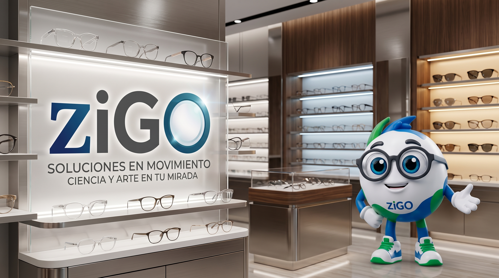

Misión
Brindar soluciones visuales integrales mediante exámenes optométricos de alta precisión y armazones con identidad propia, acercando la salud visual profesional con calidez, puntualidad y tecnología.
Ciencia optométrica de vanguardia unida a un servicio humano, transparente y cercano

Comprometida con transformar la experiencia tradicional de acudir al optometrista, la Dra. Escarlet Alcocer lidera cada valoración clínica en ziGO con rigor profesional, empatía y dedicación.
Su enfoque combina un diagnóstico visual minucioso con asesoría personalizada para que cada paciente comprenda su salud ocular y elija el armazón o lente de contacto que potencie su bienestar y seguridad diaria.
Brindar soluciones visuales integrales mediante exámenes optométricos de alta precisión y armazones con identidad propia, acercando la salud visual profesional con calidez, puntualidad y tecnología.
Consolidarnos como la óptica referente en innovación, confianza y cercanía en México, integrando herramientas digitales inteligentes con atención clínica de excelencia para mejorar la calidad de vida de cada paciente.
En ziGO tu voz impulsa nuestra mejora continua. Si tuviste algún inconveniente o deseas compartir una sugerencia sobre nuestro servicio, escríbenos directamente.